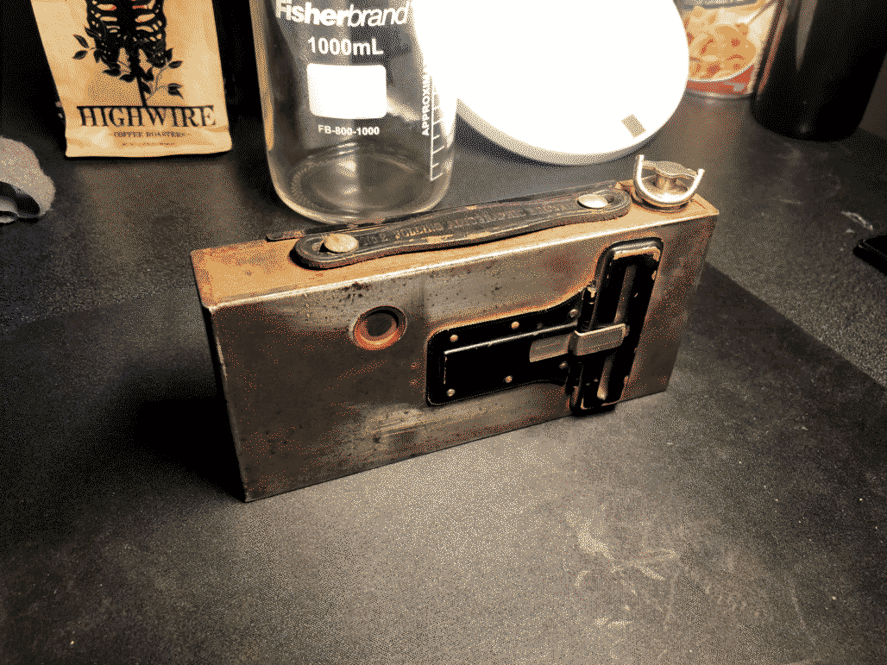
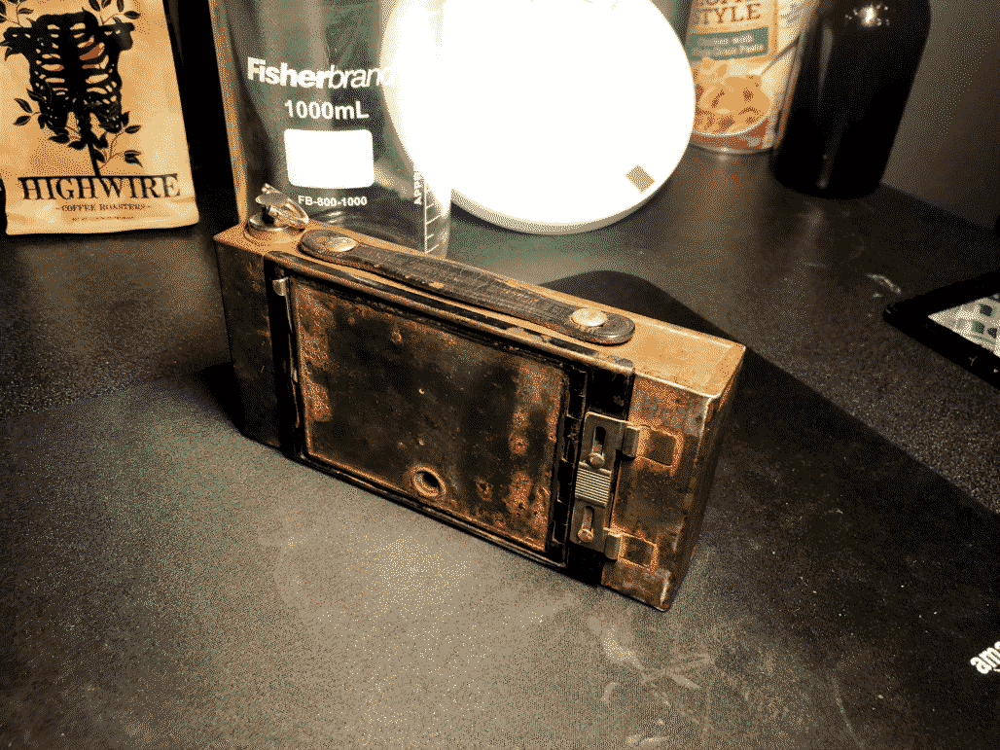
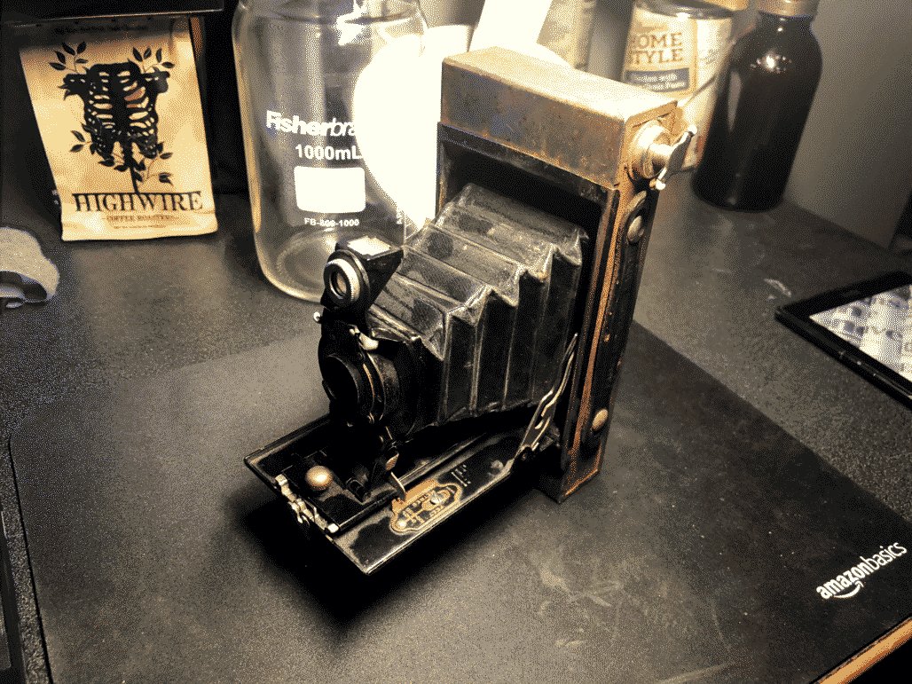
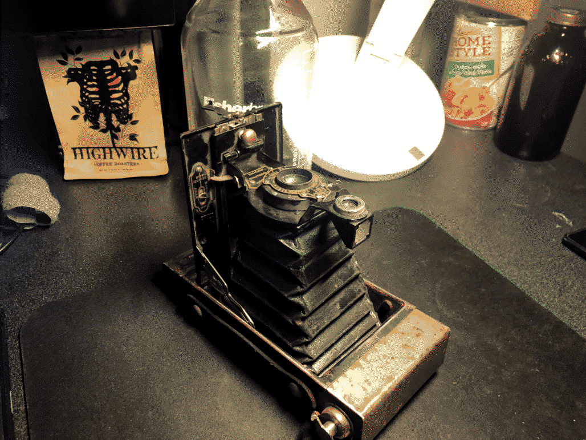

Kodak No. 2 Folding Autographic Brownie
I recently (150222) got a camera!
It's not an especially useful camera, as I still need to get film for it (and because it uses film!), but I think it's neat :D
I found it at an antique fair, in even worse state than the picture shows, and cleaned it up a little. At some point I'd love to get some film for it and see how the photos look, but for now I like just having it on my desk as a little thing to fiddle with (though it's more than 100 years old!)
Speaking of photos, here are some pictures of it in all of its rusted glory
   